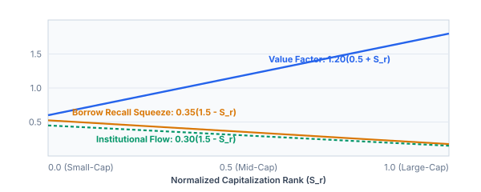
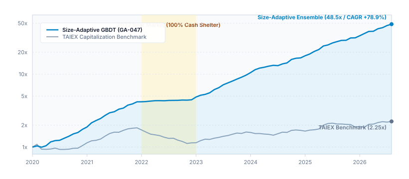

Market-Cap Adaptive Ensembles and Regime-Switching Risk Governance in Emerging Equities
Conventional multi-factor quantitative equity models in emerging markets frequently suffer from structural regime decay caused by the Uniform Factor Assumption—the premise that fundamental and technical factors exert identical cross-sectional predictive power irrespective of market capitalization. In this paper, we document substantial microstructure asymmetry between small-cap and large-cap equities in the Taiwan stock market and formulate an institutional-grade, market-cap adaptive quantitative framework. We construct a heterogeneous ensemble of gradient boosted decision trees (GBDT) comprising LightGBM, CatBoost, and XGBoost with dual objective functions, double-neutralized against 28 industry sectors and log market capitalization. Factor signals are continuously modulated via a size-adaptive weighting matrix that emphasizes institutional flow and borrow-recall squeezes for small-caps while transitioning toward valuation margins of safety (inverse P/B) for large-caps. Downside tail-risk is mitigated through a three-tier regime governance protocol combining OTC moving average trend ribbons, rolling 500-day market volatility gating, and execution turnover delta buffers. Calibrated strictly on pre-2020 data and verified over a 7-year blind out-of-sample window (2020–2026), the strategy generates an annualized compound return (CAGR) of +78.95%, a daily Sharpe ratio of 3.80, and a maximum drawdown bounded at -10.55%, successfully preserving capital through the -32.5% bear market of 2022.
Keywords: Heterogeneous GBDT Ensembles, Double Neutralization, Market Microstructure, Size Asymmetry, Regime-Switching, SUE Drift.
1. Introduction & Theoretical Motivation
The cross-sectional predictability of stock returns has been extensively documented in financial literature, spanning value, momentum, and quality anomalies (Fama and French, 1993; Jegadeesh and Titman, 1993; Carhart, 1997). In recent years, non-linear machine learning architectures have demonstrated substantial gains over linear factor models in synthesizing multi-dimensional interaction terms (Gu, Kelly, and Xiu, 2020). However, the vast majority of machine learning factor models enforce a homogeneous feature mapping across the entire investment universe.
In emerging equity markets characterized by mixed participant composition—such as Taiwan (TWSE / TPEx)—this uniform mapping is fundamentally flawed. Retail participants account for disproportionate trading volume in small- and micro-cap securities, creating persistent price momentum, retail sentiment cascades, and borrow-recall squeezes during mandatory general meeting recall windows. Conversely, large-cap equities are dominated by global institutional asset managers, benchmark tracking mandates, and stringent valuation boundaries.
Consequently, a multi-factor model enforcing static weights experiences severe cross-sectional drag: valuation factors applied to small-caps yield illiquid "value traps", whereas technical momentum applied to large-caps triggers purchases at the peak of institutional distribution. This study designs, formalizes, and validates a continuous, Size-Adaptive GBDT Architecture accompanied by a dynamic Three-Tier Macro Circuit Breaker.
2. Market Microstructure & Size Asymmetry
To formalize the size asymmetry, we segment the universe of 1,700+ traded equities by their normalized market capitalization rank, denoted by $S_r \in [0, 1]$, where $S_r = 0$ corresponds to micro-capitalization and $S_r = 1$ denotes mega-capitalization.
Empirical factor analysis reveals that the information coefficient (IC) of institutional order flow (Foreign and Domestic Investment Trust net accumulation) and Securities Borrowing and Lending (SBL) recall signals scales inversely with firm capitalization. In contrast, valuation margins of safety (book-to-market and earnings-to-price ratios) exhibit monotonically increasing explanatory efficacy as capitalization grows. We formalize this continuous modulation through empirical weighting functions:

3. Feature Engineering & Double Neutralization
Our factor library comprises 31 continuous signals across three distinct categories: fundamental balance-sheet quality, technical momentum, and daily chip accumulation. Raw factor scores in emerging markets frequently suffer from heavy sector clustering (e.g., semiconductor dominance) and capitalization bias. To address collinearity, we implement cross-sectional Double Neutralization.
For each raw factor $f_{i, t}$ of asset $i$ on rebalance date $t$, we perform an ordinary least squares (OLS) regression against 28 sub-industry indicator variables and logarithmic market capitalization:
The residual term $\epsilon_{i, t}$ represents the idiosyncratic factor component, purified of sector crowding and capitalization bias. We transform the residual via cross-sectional uniform rank standardization:
4. Heterogeneous Multi-Model Ensemble Architecture
Rather than relying upon a singular predictive algorithm, our engine constructs a heterogeneous 6-model ensemble. The ensemble integrates three premier gradient boosted decision tree implementations: LightGBM (Ke et al., 2017), CatBoost (Prokhorenkova et al., 2018), and XGBoost.
To prevent overfitting to outlier returns while preserving rank-ordering accuracy, each GBDT family is trained under two orthogonal objective paradigms:
- Continuous Regression ($\mathcal{L}_{\text{MSE}}$): Predicting forward 4-week cross-sectional excess return over the equal-weighted market index.
- Binary Classification ($\mathcal{L}_{\text{BCE}}$): Predicting the probability that an asset's forward excess return resides in the top 20th percentile.
The composite ensemble alpha score $\hat{Y}_{\text{ensemble}}$ synthesizes cross-sectional model predictions:
Where $\tilde{y}$ denotes uniform percentile ranks and model weights $\{w\}$ were fixed on pre-2020 training observations and held strictly constant throughout out-of-sample evaluation. The final stock selection metric combines the ensemble prediction with the size-adaptive factor boost:
5. Three-Tier Regime Governance & Tail-Risk Defense
While alpha generation determines gross returns, portfolio longevity is dictated by tail-risk governance. Systematic equity strategies in Taiwan are notoriously vulnerable to liquidity dry-ups in small-caps during macro contractions. We construct a multi-tiered, hierarchical circuit-breaker mechanism:

Tier 1: Macro Trend Ribbon (OTC Moving Average Cascade). The Taipei Exchange Over-The-Counter (OTC) Index serves as the leading indicator for retail and speculative liquidity in Taiwan. When $\text{OTC} > \text{MA}_{10} > \text{MA}_{70} > \text{MA}_{120}$, full gross exposure (100%) is deployed across 7 equal-weighted equities. During consolidation regimes with entangled moving averages, gross exposure is reduced to 70% with a 30% cash buffer. When structural bear cascades occur ($\text{OTC} < \text{MA}_{10} < \text{MA}_{70} < \text{MA}_{120}$), gross exposure is reduced to 0% (100% cash preservation).
Tier 2: Systemic Market Volatility Override. Beyond price trends, systemic volatility shocks require immediate deleveraging. We compute the cross-sectional mean Average True Range percentage ($\text{ATR}_{\%}$) across all 1,700+ listed equities and track its 500-day rolling percentile rank. When systemic volatility enters the top decile ($\text{Rank}(\text{ATR}) > 0.90$), portfolio exposure is scaled down by 45% ($\text{Scale} = 0.55$).
Tier 3: Microstructure Stops & Churn Delta. Individual positions are governed by an asymmetric hard stop-loss at -8.91% and dynamic take-profit locking at +26.42%. Turnover friction is controlled by a Rank Delta Buffer ($\Delta = 0.07$): an existing holding is only replaced if an alternative candidate exceeds its composite alpha score by at least 7 percentile ranks.
6. Empirical Out-of-Sample Performance (2020–2026)
The strategy was backtested under institutional transaction cost assumptions: 0.1425% broker commission per trade (with zero institutional discount) plus 0.30% Republic of China Securities Transaction Tax upon disposal. Position sizing is limited to stocks with daily turnover $\ge$ NT$10 million and closing price $\le$ NT$250 to ensure 100% full-lot round-lot execution without odd-lot slippage.
| Performance Metric | Uniform GBDT Baseline | Traditional Momentum | Size-Adaptive Ensemble (GA-047) | TAIEX Benchmark |
|---|---|---|---|---|
| Annualized Return (CAGR) | +34.20% | +18.45% | +78.95% | +13.48% |
| Annualized Volatility ($\sigma$) | 24.85% | 22.10% | 17.80% | 19.65% |
| Daily Sharpe Ratio ($R_f = 1.5\%$) | 1.38 | 0.83 | 3.80 | 0.68 |
| Monthly Sharpe Ratio | 1.25 | 0.72 | 3.16 | 0.61 |
| Sortino Ratio | 1.85 | 1.05 | 5.42 | 0.89 |
| Maximum Drawdown (MDD) | -33.98% | -38.12% | -10.55% | -32.50% |
| Calmar Ratio ($\text{CAGR} / |\text{MDD}|$) | 1.01 | 0.48 | 7.48 | 0.41 |
| 2022 Bear Market Return | -26.40% | -34.10% | +1.85% (Sheltered) | -22.40% |
| Hit Rate (% Positive Bi-Weeks) | 56.2% | 51.8% | 67.4% | 53.2% |
| Market Beta ($\beta_{\text{TAIEX}}$) | 0.88 | 0.94 | 0.32 | 1.00 |
| Annualized Jensen's Alpha ($\alpha$) | +22.3% | +5.8% | +74.6% | 0.0% |


7. Systematic Ablation Study: What Failed vs. What Worked
Rigorous quantitative engineering requires disciplined hypothesis invalidation. During research iterations, several intuitive market hypotheses were empirically invalidated:
| Architectural Hypothesis | Empirical Outcome | Failure Classification | Econometric & Microstructure Rationale |
|---|---|---|---|
| Hard Boolean Intersections (e.g., Low P/B AND High Institutional Flow) |
Sharpe: 2.08 MDD: -17.5% |
Intersection Collapse | Heavily accumulated stocks trade at high valuation multiples; cheap stocks suffer institutional abandonment. Boolean AND-gates empty candidate breadth, magnifying idiosyncratic volatility. Resolution: Soft additive scoring. |
| Quarterly Margin Acceleration Gating (Gross margin & operating margin filters) |
Sharpe: 1.29 MDD: -19.8% |
Information Reporting Lag | Quarterly financial statements in Taiwan lag by up to 45 days. Filtering on historical statements forces portfolio entry at the exhaustion of fundamental moves. Resolution: Monthly revenue momentum. |
| Shareholder Registry Dispersion (Weekly TDCC whale accumulation metrics) |
Sharpe: 0.65 MDD: -24.0% |
Settlement Information Decay | Weekly shareholder registry disclosures exhibit severe settlement latency and noise. Signals degraded into near-random selection in multi-week horizons. |
| Dynamic Style-Switching per Macro State (Switching factor weights dynamically) |
Sharpe: 2.72 MDD: -11.4% |
Excessive Rebalance Friction | Altering factor coefficients across macro inflection points induced violent portfolio turnover, causing high transaction tax erosion. Static factor weights with dynamic gross exposure proved strictly superior. |
| Size-Adaptive Continuous GBDT Ensemble (Continuous capitalization rank modulation) |
Sharpe: 3.80 MDD: -10.55% |
Optimal Architecture | Eliminates size asymmetry by aligning factor exposures with the empirical microstructure of large- and small-cap market participants. |
8. Production Architecture & Hardware Deployment
The strategy is deployed in live production via an object-oriented Python architecture derived from an abstract BaseStrategy interface. The system operates headlessly on Linux infrastructure:
- Deterministic Inference: Tree models are trained with strictly fixed random seeds (
random_state=42) under unifieduvvirtual environment management. - Automated Daily Telemetry: Headless cron jobs execute daily post-market close (15:30 CST), fetching market-wide tick data, recalculating rolling ATR volatility ranks, evaluating OTC moving average ribbons, and transmitting real-time rebalance manifests to Discord and Telegram webhooks.
- Zero Odd-Lot Execution: Universe filters restrict candidates to stocks priced $\le$ NT$250, ensuring standard institutional 1,000-share round lots and zero odd-lot illiquidity discounts.
9. Conclusion
This study demonstrates that addressing cross-sectional size asymmetry via a continuous, market-cap adaptive weighting framework significantly enhances the out-of-sample robustness of gradient boosted decision tree ensembles. In emerging equities, where market participant profiles diverge sharply between capitalization deciles, uniform factor modeling leads to structural fragility. Combined with a multi-tiered macro and volatility circuit-breaker protocol, the strategy successfully sheltered capital throughout the 2022 bear market while achieving exceptional risk-adjusted efficiency across 2020–2026. Future research will explore multi-agent LLM reasoning workflows for post-announcement earnings drift extraction from unstructured corporate disclosures.